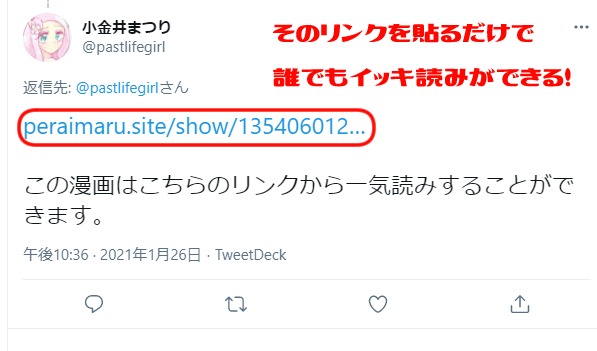

- AndroidアプリかGoogleChrome拡張を導入すれば、URLを入力することなくワンタッチで利用できます。
- 古いツイートは取得がうまくいかないときがあります。ツリーの最後のツイートを指定したほうがうまくいきやすいです。
- 表示結果のページのリンクを貼れば誰でもイッキ読みできるので、マンガの作者が自らリンクを貼るのもOK！
 - ログインの際は、いいね・RTを行うため、「DM送信」などの権限を取得していますが、「マンガの表示」「いいね・RT」以外には一切使用しませんのでご安心ください。
- [2021/02/21] スマートフォンで表示がずれる場合、リロードすると治るケースが多いようです（後日、正式対応予定）。
【Chrome拡張】ボタンをクリックするだけ！
【Androidアプリ】Twitterアプリから共有するだけ！